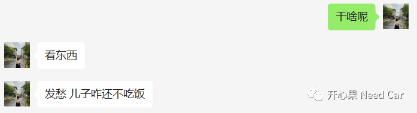

开心果 Need Car · 2023-04-11T13:46:00+08:00 · 微信原文
“干啥呢”，拉出了如下的对话。

如上是媳妇给的回复。不知道大家是否也这样，每当你家娃有个“风吹草动”，都会让你焦躁不安，尤其ta生病的时候，夜里你会醒多次，查看小家伙的状态......
以前我会觉得媳妇太过紧张，觉得小娃娃生病是一件很正常的事，没必要过分紧张。但，这终究是我“认为”，因为我的角色属性里，永远不会有“妈妈”这个角色，所以，我自己的“认为”无法理解“妈妈的焦虑”，自然，也就无法诠释出焦虑背后，所藏着的东西。
我很感性，所以，会将生活中，某一时某一刻的感受记录下来，让文字拴住过往，打一个结，告诉小家伙，你妈妈很爱你。等以后的某一天某一刻，打开每一个绑着的结，给他看看。那一刻或许是他成家的那一天，或许是他有孩子的那一天，再或许，是他需要回忆的那一天......
“Hi，开心果，你知道你名字的由来吗？”最开始，爸爸妈妈给你取名“开心”，这在你出生之前就想好的，后来，你姥姥说，朋友家有孩子叫开心，不想重名，所以就加了一个“果”。这个名字也很好理解，就是希望你开开心心长大。
此刻，想记录一些你现在理解不了的事情，爸爸想在这告诉你一些伟大语录，这语录出自你妈妈：
“希望你成为一个普通人”，你的妈妈不想你生活得太累，不想你去考第一名，不想你被人簇拥，只想你有一份自己喜欢的工作，做一个对社会有用的人。
“爸爸妈妈给你很多的爱，以后遇到挫折的时候拿出来用”，这话爸爸很喜欢，爸爸妈妈会给你很多很多的爱，这些爱，是你的小裤兜装不下的，它很厉害，比你的奥特曼变身器还厉害，比你打妖怪的棍棍还厉害......只有给你这么多的爱，爸爸妈妈才更安心。因为，做人呐，其实不容易，正如歌词“做人呐 想想也不容易 要学会去珍惜 也要学着偷偷放弃 受了委屈 还要把微笑带情绪 ... 做人呐 岂能尽如人意 ...”
“谢谢你，开心果，选择我们做你的爸爸妈妈”。曾听到这样一个说法“人在来世上之前，已经看过自己将要度过的完整一生”也就是说，在喝下孟婆汤之前，可以选择来不来这世上走一遭。开心果，你是不是知道自己会遇到一个好妈妈，来到我们身边的？谢谢你，开心果。
......
爱啊，它藏在哪了？或许，藏在妈妈的焦虑里。